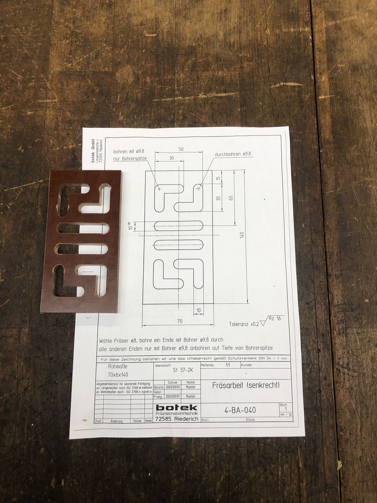

No login required
Print 4-BA-040 — Meander Slot Plate
A single ø8 slot folded back on itself through a 6 mm plate. One end is drilled through at ø9.8 and every other end is spot-drilled to the point only — the difference lives in a note under the view, not in the geometry, so students have to actually read the sheet.
Vertical milling · 70×6×140 · tolerance ±0.2
Prep5 min
Class45 min
ArrivesPDF